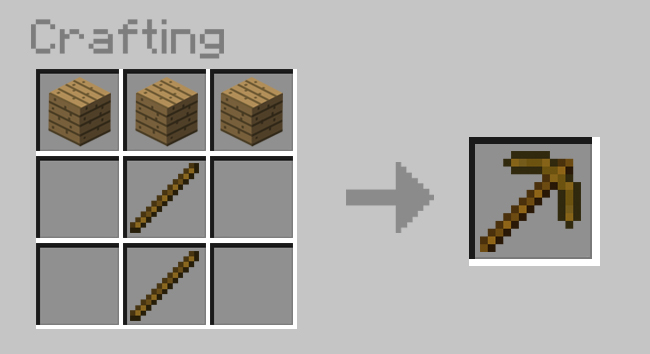
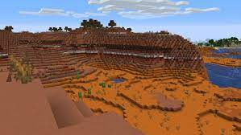
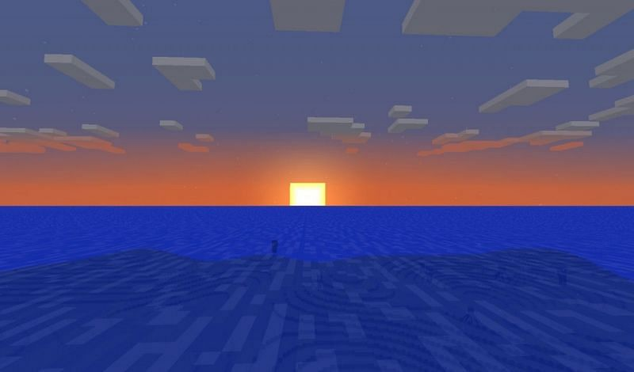

You just spawned.
look around. if you can see any trees,move towards them.
now point it at one tree and hold the left mouse button to start chopping it down
a tiny log will apear when the block is destroyed. it should fly towards you. if it does not, move closer. now it will be in your hand. press E. right click on the image of the log then click on one of the sqaures under Crafting.
now right click on the planks and left click on each of the crafting sqaures. now click on the item and put it in the lower row of "slots".
you now have a crafting table.
this gives you more crafting "recipies".
get more wood. craft more planks. craft sticks with two planks.
now scroll down until you have the table in your hand.click on the ground to place it, then click on the table to begin crafting.

that's how you craft a pick. and that's an axe.
build a house out of the planks.
but what if you dont see any trees?


you will probably be in one of these biomes. try to find the end of them.
dig with your pick. mine until you find coal ore.this is like stone exept it has black spots.
craft a torch with a stick under coal. place them in your mine.
craft a door for your house with 6 wood. shelter in your house for the night.
During the night, monsters will spawn.MOBS
what's a mob?
mobs in Minecraft are the creatures that share the world with you.there are three types
of mobs: hostile, neutral, and passive.
passive mobs are animals that can't hurt you.
neutral mobs sometimes hurt you.
hostile mobs are monsters that always try to hurt you.
Hostile mobs
Drowned
creepers are the unoficial mascot of this game.
you may be thinking the're pretty weak without any arms,but that's definitly NOT the case! Get too close to this hostile mob and you'll have an explosive surprise.
drops: health:20
Creeper
creepers are the unoficial mascot of this game.
you may be thinking the're pretty weak without any arms,but that's definitly NOT the case! Get too close to this hostile mob and you'll have an explosive surprise.
drops: health:20
Zombie
creepers are the unoficial mascot of this game.
you may be thinking the're pretty weak without any arms,but that's definitly NOT the case! Get too close to this hostile mob and you'll have an explosive surprise.
drops:health:20
Phantom
creepers are the unoficial mascot of this game.
you may be thinking the're pretty weak without any arms,but that's definitly NOT the case! Get too close to this hostile mob and you'll have an explosive surprise.
drops:health:20
Nuetral mobs
Spider
creepers are the unoficial mascot of this game.
you may be thinking the're pretty weak without any arms,but that's definitly NOT the case! Get too close to this hostile mob and you'll have an explosive surprise.
drops: health:16
Wolf
Wolves are very useful mobs! They can be tamed by the player feeding them bones or meat.Once tamed,they will fight mobs that you attack,and teleport to you when seperated. Do not attack!
drops:Nothing!health:20 tamed, 8 untamed
Enderman
creepers are the unoficial mascot of this game.
you may be thinking the're pretty weak without any arms,but that's definitly NOT the case! Get too close to this hostile mob and you'll have an explosive surprise.
drops:health:40